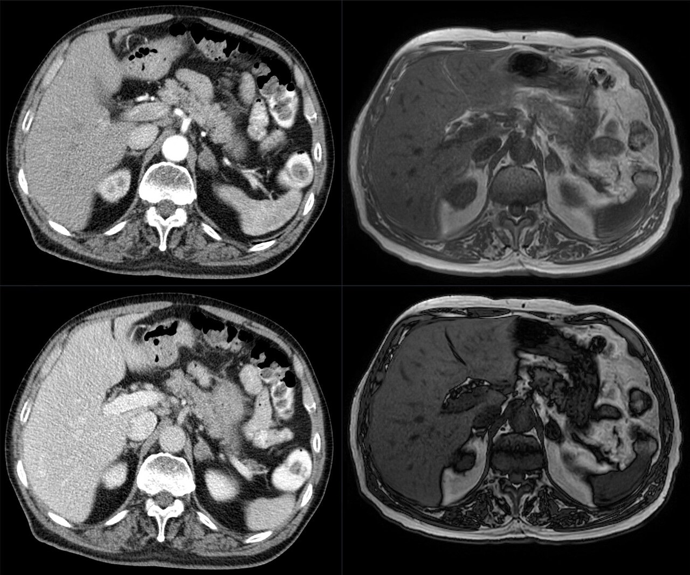

Ficha del catálogo
Masa suprarrenal
- Sistema
- Urinario
- Modalidad
- TC
- Región
- Retroperitoneo, glándulas suprarrenales
- Dificultad
- Avanzado
Las masas suprarrenales son hallazgos habituales en estudios abdominales y la mayoría corresponde a adenomas no funcionantes benignos. El reto radiológico consiste en separar estas lesiones benignas de metástasis, feocromocitomas y carcinomas corticosuprarrenales. La evaluación siempre debe integrar la imagen con el estudio hormonal y los antecedentes oncológicos.
Técnica
El protocolo dedicado incluye fase simple con cortes finos y, si la lesión no es diagnóstica, fases con contraste y lavado a los 10 o 15 minutos. La resonancia con secuencias en fase y fase opuesta detecta el contenido lipídico intracelular del adenoma. La tomografía por emisión de positrones se reserva para pacientes oncológicos con lesiones indeterminadas.
Qué observar
- Atenuación en fase simple, con umbral de 10 unidades Hounsfield para el adenoma rico en lípidos
- Pérdida de señal en las secuencias en fase opuesta respecto a las en fase
- Tamaño, contorno y homogeneidad de la lesión
- Presencia de necrosis, hemorragia o calcificaciones que orienten a malignidad
- Realce intenso y persistente sugestivo de feocromocitoma
- Crecimiento en estudios previos y afectación bilateral
Hallazgos
El adenoma típico es una masa pequeña, homogénea, de contornos lisos, con atenuación menor de 10 unidades Hounsfield en fase simple y lavado rápido del contraste. Las lesiones malignas suelen ser mayores de 4 centímetros, heterogéneas, con necrosis central y lavado lento. El feocromocitoma muestra realce muy intenso, señal marcadamente hiperintensa en T2 y puede presentar degeneración quística.
Perlas
Una masa suprarrenal homogénea con atenuación igual o inferior a 10 unidades Hounsfield en fase simple es un adenoma rico en lípidos con muy alta especificidad y no requiere más estudios de imagen. Cuando supera ese umbral, el cálculo del porcentaje de lavado absoluto y relativo permite rescatar a los adenomas pobres en lípidos.
Diagnóstico diferencial
- Metástasis suprarrenal
- Suele ser heterogénea, de crecimiento progresivo y con lavado lento en un paciente con neoplasia primaria conocida.
- Feocromocitoma
- Presenta realce muy marcado, señal muy alta en T2 y correlato bioquímico de exceso de catecolaminas o metanefrinas.
- Mielolipoma
- Contiene grasa macroscópica con atenuación negativa mezclada con elementos mieloides, hallazgo prácticamente diagnóstico.
- Carcinoma corticosuprarrenal
- Es grande, heterogéneo, invasivo, con necrosis y frecuente invasión de la vena cava inferior.
Simuladores
- Pilar diafragmático prominente
- Divertículo gástrico o asa intestinal adyacente
- Vasos tortuosos peri suprarrenales
Por modalidad
- TC
- Aporta el umbral de atenuación en fase simple y el análisis de lavado del contraste, base de la caracterización de la lesión.
- US
- Tiene papel limitado en el adulto por la interposición gaseosa, aunque resulta útil en el paciente pediátrico y para lesiones voluminosas.
Protocolo
Tomografía suprarrenal dedicada con cortes de 2 a 3 milímetros en fase simple, fase con contraste a los 60 a 70 segundos y fase diferida a los 10 o 15 minutos, midiendo la atenuación con la misma región de interés en las tres fases. En resonancia se adquieren secuencias potenciadas en T1 en fase y fase opuesta, T2 y estudio dinámico con contraste.
Clasificación
El lavado absoluto se calcula comparando la atenuación en fase con contraste, la diferida y la simple, y un valor superior al 60 por ciento indica adenoma; el lavado relativo, que prescinde de la fase simple, se considera diagnóstico por encima del 40 por ciento. El tamaño complementa la valoración, ya que el riesgo de malignidad aumenta claramente por encima de los 4 centímetros.
Errores frecuentes
- Calcular el lavado con regiones de interés colocadas en zonas distintas de la lesión en cada fase
- Aplicar el análisis de lavado a un feocromocitoma, que puede simular el comportamiento de un adenoma
- No correlacionar el hallazgo con el estudio hormonal antes de considerarlo un incidentaloma banal

suprarrenal adenoma incidentaloma lavado de contraste feocromocitoma mielolipoma unidades Hounsfield